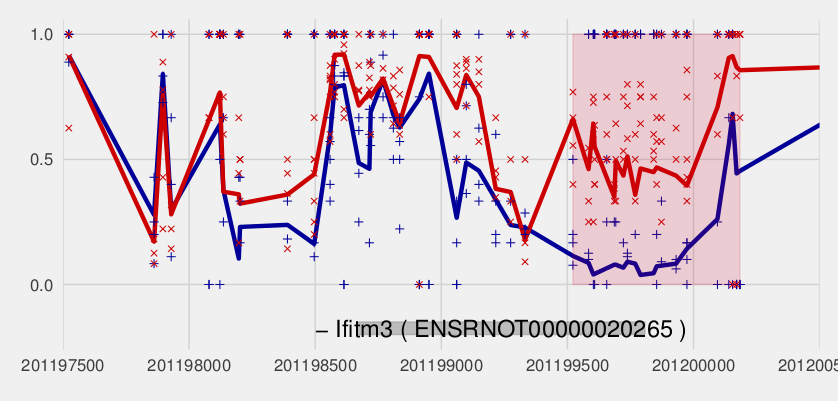

ABBA
Aproximate Bayes for Bisulphite sequecing Analysis is perl program for analysis WGBS data. The program can be run locally or spread over a cluster using the qsub system.
About
ABBA is a bayesian framework for the identification of differential methylation, taking the data from read counts to regions.

Installation
To use ABBA you will are required to have Perl installed and the ability to install packages using CPAN or CPANM. In the situation where you do not have sudo access we recommend that you install PerlBrew and use CPANM to manage your perl libraries, for details see http://perlbrew.pl or follow the following instructions. Please be aware that this may not be suitable for all situations, it is best to try with the system perl first and use this as a fall back.
Step 1: Install PerlBrew (Optional, only if your system perl is not usable)
First of all download the perlbrew files and execute them:
$ \curl -L http://install.perlbrew.pl | bashOnce it is installed follow the instructions to edit your .bash_profile and then install Perl using Perlbrew:
$ perlbrew install perl-5.16.0This step will take some time to complete. Once it has you then need to install cpanm using perlbrew:
perlbrew install-cpanm
cpanm --local-lib=~/perl5 local::lib && eval $(perl -I ~/perl5/lib/perl5/ -Mlocal::lib)Step 2: Install Required Perl Packages
There are number of perl libraries that are required, please install these from the command line as follows (alternatively you can use sudo cpan if your installation requires this):
$ cpanm Text::xSV
$ cpanm SQL::Abstract
$ cpanm DBI
$ cpanm Data::Dumper
$ cpanm File::Path
$ cpanm File::Basename
$ cpanm Getopt::StdStep 3: Install SQLlite3
ABBA uses SQLite in order to store and process locations. It can be installed as follows:
sudo apt-get install sqlite3 libsqlite3-devStep 3: Install required R packages
ABBA uses R to perform much of the statisical analysis and plotting. In order to that the following libraries are required (Remember that if you intend to use a none system version of R when running on a cluster you will also need to ensure that this libraries are installed for that version):
install.packages("ggplot2")
install.packages("ggthemes")
install.packages("sp")
install.packages("INLA", repos="http://www.math.ntnu.no/inla/R/stable")Step 4: Download software and the test data and annotation library
First of all to download the software clone it from our github account as follows:
git clone https://github.com/SystemsGeneticsSG/ABBA.git
cd ABBAWe have provided a script that will fetch all of the required data and create the folders required. This can be executed as follows:
perl setup.pl -afwhere -a is the flag to download the annotations database for the test and -f is the flag to download the test data.
Input Data Format
The input data for ABBA is very simple but requires that you follow some strict formatting conditions. For each chromosome you will need a file containing the data. Each file will need to following the following naming convention chr1_both.in. This format gives the chromosome name (eg chr1) and the strand setup (both). The file needs to be tab delimied. Within the file the first four columns describe the locus eg. chr1 702 703 -. The following columns describe the number methylated reads and total reads in each replicate, For example if you have a 2 replicates in each sample then a line in the file might look like this:
chr1 3417 3418 - 9 10 8 10 0 10 0 10You can see full examples by downloading the test data and paper examples using setup.pl as described above. Running ABBA serially
The simplest way to run ABBA is serially on a local machine. This will prepare the required files, execute the analysis and plot the results one after an other. There are a number of flags that need to be set for the script to run as follows:
perl ABBA.pl -f input/test_set/ -n 2 -r 4 -p ABBAtest -a rn4- -f is the directory with the data to process in
- -s is the window size between chunks that will be used to split the genome, ie here chunks will always be at 3000bp apart.
- -m this the minimum number of CpGs that have to be in each chunk. If this is not reached when a gap of 3000bp occurs then the file will not be split.
- -n this is the number of samples what are being analysed, this should always be 2
- -r this is the number of replicates for each sample.
- -t this is the number of reads to be accepted as a valid CpG site.
- -c the is the number of reliable CpG sites required at a certain locus to used in the analysis.
- -p is the name you are giving to the project
- a is the species that the annotation will come from
- -o is the directory to use as a tmp
- -w is the window size to place around each DMR when plotting
- -d is the average difference between the two samples for a DMR to considered.
- -z is the number of standard deviations from the mean that the difference has to be for a DMR to be considered.
- -y is the CpG density required within a CpG to be considered.
- -e is the type of DMR to consider (density/length)
At any stage you can open output/progress.html to view how the algorithm is proceeding.
Running ABBA on a cluster
Running ABBA serially may take some time if you have a large dataset or you don't apply strict filtering criteria. In order to help with this ABBA has been implemented with the Sun Grid Engine queing system in mind. In order for this to work the executing is split into two stages; firstly the setup and parallel processing and secondly the post processing and plotting. We refer to these two sections as he qsub_setup and qsub_recover. The first can be executed as follows (with assumption that the version of R that will be used is stored in $HOME/R/3.2.2/bin/):
qsub -pe smp 2 -N test_setup -o cluster/ABBAtest_setup.output -e cluster/ABBAtest_setup.error perl ABBA.pl -f input/test_set/ -n 2 -r 4 -p ABBAtest -a rn4 -i qsub_setup -j /home/gmsojlr/R/3.2.2/bin/This will start a single job that will prepare the data and then spawn extra jobs for each chromosome. You monitor the progress of this stage in two ways. Firstly using qstat in the normal way:
qstatYou can also extract the progress from the sqlite database that ABBA generates as it is processing as follows:
echo "select stage,max(counter)*100 from file_ticker group by stage;" | sqlite3 dbs/YOURPROJECTNAME.sqliteThis will display the percentage of each chromosome that has been analysed. It is best not to do this too often as it can create lock errors on the sqlite database.
Once this has run and all of the individual chromosome jobs has completed then you can run the second stage as follows:
qsub -pe smp 2 -N test_setup -o cluster/ABBAtest_setup.output -e cluster/ABBAtest_setup.error perl ABBA.pl -f input/test_set/ -n 2 -r 4 -p ABBAtest -a rn4 -i qsub_recoverOnce ABBA is complete the results are automatically written to a html page that you can view as follows:
xdg-open output/PROJECTNAME/PROJECTNAME_results.htmlIf you have run the analysis on a cluster you can either scp the output folder to a convienient location or if you ssh -X username@yourserver.com you should also be able to view the webpage in a X-forwarded web browser using the same xdg-open command.
If you wish to use the dmrs elsewhere then a bed file is also created and located in output/PROJECTNAME/dmrs.bed.
Troubleshooting
Sometimes when running in parrell R can have problems with shared libraries (eg error while loading shared libraries: libicuuc.so.52: cannot open shared object file: No such file or directory). If this happens one workaround is to locally install a version of R into your home directory as follows:
$ wget http://cran.rstudio.com/src/base/R-3/R-3.2.2.tar.gz
$ tar xvf R-3.2.2.tar.gz
$ cd R-3.2.2
$ ./configure --prefix=$HOME/R/3.2.2/
$ make && make installYou will then need to run ABBA using the -j option to specify where the R installation is and to install the required packages into this version of R.
During our own testing we sometimes found that certain CRAN mirrors would not contain the required packages. This results in ar error say that package X is not available for R v3.x.x. We found that one way to avoid this is to specifiy the repo using the following:
install.packages("ggplot2", repos="http://cran.cnr.berkeley.edu")Development
Want to contribute? Great!
First off please contains @OwenRackham so you can be setup as a contributer to the package.
Todos
- Write Tests
- Javascript DMR viewer
- GO enrichment pipeline
- Project name folder so that overwritting doesnt occur
- qsub_recover reteives the settings from the database rather than relying on the settings being the same, this requires a new table with each of the paramaters in it. This would be pretty useful anyway! this should also include the FDR cutoff
- change folder structure so that it is easy to download all of the results from one project independently
- recover files that have been processed properly so that failed ones can be rerun on larger nodes.
License
MIT